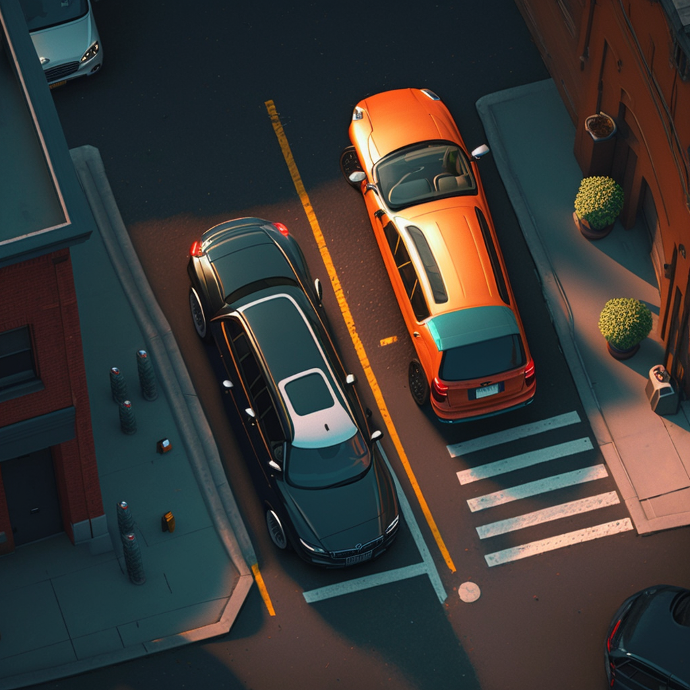
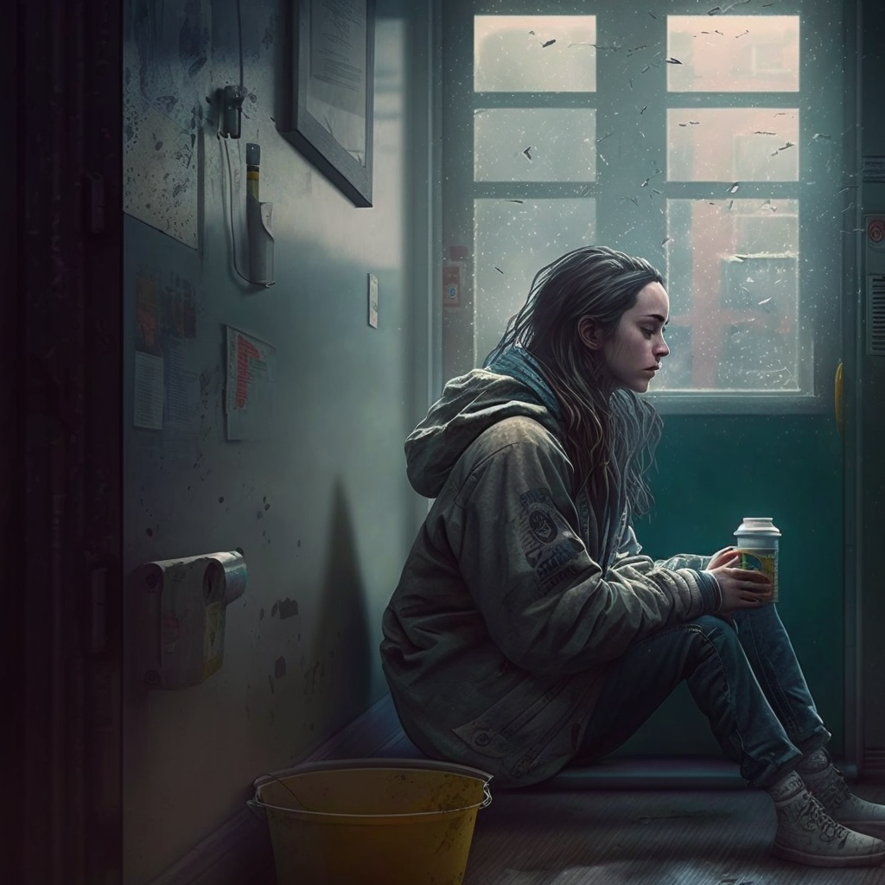

Parallel
For this project, I was tasked with creating a mobile app that would help drivers find available parking spots and pay for them conveniently. I started by conducting extensive research to understand the needs of drivers and the parking industry.
Based on my research findings, I began the design process by creating a user-friendly interface that would make it easy for drivers to navigate the app. The app included features such as a map that displayed available parking spots in real-time and provided directions to the selected spot.
To make the payment process easy, I integrated the app with multiple payment options, including credit cards and digital wallets. Drivers could easily pay for their parking spot through the app, eliminating the need to carry cash or worry about finding a payment machine.
NASA Rewrite
As a talented web designer, I am excited to share my vision for the improvements I made to the NASA website. With my expertise, I transformed the website into an immersive and engaging experience for visitors from all around the world.
One of the key improvements I made was the creation of a mobile app that allowed users to explore the wonders of space on-the-go. This app provided a user-friendly interface that made it easy to navigate and discover the latest news and discoveries from NASA. Whether you were a space enthusiast or simply curious about the mysteries of the universe, the NASA mobile app had something for everyone.
In addition to the mobile app, I also revamped the website's design to ensure that it was modern, visually stunning, and easy to navigate. From the homepage to the sub-pages, users could access the information they needed quickly and easily. The new design also featured interactive elements, such as 3D models, videos, and animations, to bring the wonders of space to life.

Twin Cities Rehabilitation Project
As a web designer, I was tasked with redesigning the website for The Twin Cities Recovery Project. My main goal was to create a user-friendly and informative platform that would help individuals struggling with addiction find the support they needed.
I started by conducting a thorough analysis of the current website to identify areas that needed improvement. Based on my analysis, I developed a comprehensive redesign plan that included creating a mobile app for the organization.
To create the mobile app, I started by identifying the most critical features that would be useful for people seeking support. I then designed a simple, easy-to-use interface that would allow users to navigate the app effortlessly. The app included features such as resources for addiction treatment and support, a directory of local support groups and meetings, and a forum for people to connect with others in recovery.